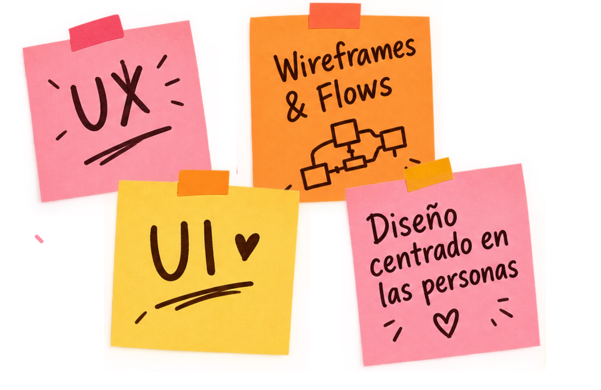

Hola, soy
Karina Galaz · Product Designer
Diseño productos B2B complejos: muchos datos, varios roles, un solo sistema.
He diseñado para un B2B SaaS usado por más de 150 restaurantes, un marketplace de talento con 3 superficies (app, web y admin) y una plataforma de conservación con 3 roles de usuario. De la arquitectura de información y los flujos al design system y la alta fidelidad.
Busco un rol de Product Designer en un equipo de producto · Quilpué, Chile · Remoto · Español e inglés

MiTrabajo
Sobre mí
Diseño productos digitales end-to-end: parto por entender el problema, defino la arquitectura de información y los flujos, y llego a alta fidelidad lista para desarrollo, fundamentando cada decisión con el PM, el equipo de desarrollo y el cliente.
Antes del diseño estudié Control del Medio Ambiente en la UTFSM. De ahí viene mi forma de abordar los problemas: primero entiendo el sistema, después diseño.
✱Product design end-to-end
Arquitectura de información, user flows, wireframes y UI para B2B SaaS, marketplaces y back-office.
✱Datos y dashboards
Métricas como CSAT, NPS y CES presentadas para que orienten decisiones, no solo para informar.
✱Design systems
UI Kits desde cero y sistemas extendidos sobre la base de otros equipos.
✱Lenguaje de producto
Terminología y contenido consistentes entre superficies, en español e inglés.
¿Buscas Product Designer para tu equipo?
Escríbeme o descarga mi CV. También estoy en LinkedIn.